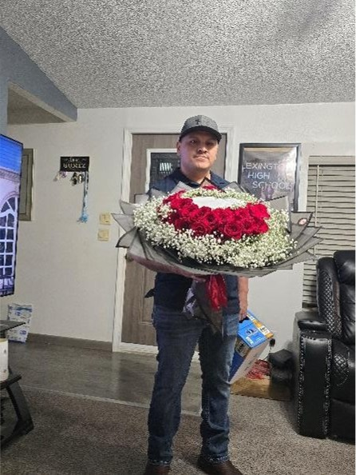

Early Life
“I grew up in a small town where life wasn’t easy. We didn’t have much, but we were happy because we had each other. Even though we were poor, our home was full of love and support.”

Motivation
“My family motivates me the most. They are my strength, my purpose, and my biggest inspiration.”
Challenges
“Crossing the border as a teenager changed me forever. It taught me strength, responsibility, and the importance of fighting for a better future.”
Goals
“Right now, I’m working on improving my English so I can get a better job and create more opportunities for my family.”
Learn more about Mexican heritage